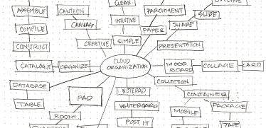
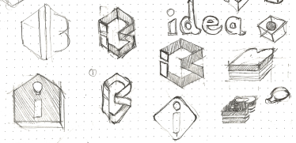

04_Branding & Identity
Brand Story & Logo
Developing the concept for the brand began with brainstorming and mind mapping. After conducting preference tests on two options, I decided on the name Ideabase. The brand story is inspired by the six components utilized when managing and unifying communities. Ideabase seeks to be friendly, reliable, and intelligently helpful while increasing efficiency.


The Ideabase logo is built on three concepts: an abstraction of the letters i and b, a project container housing your thoughts and ideas, and the concept of connection.